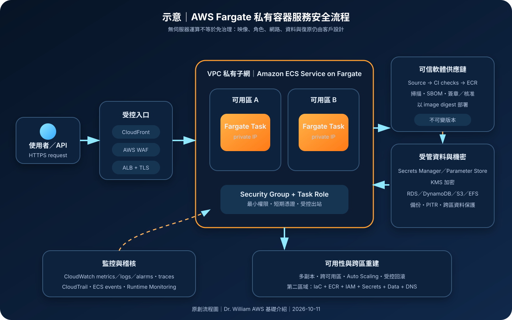

AWS Fargate：無伺服器容器運算、網路隔離與安全治理
AWS Fargate 為 Amazon ECS 與 Amazon EKS 提供受管容器運算容量。團隊不必配置或維護 EC2 叢集節點，但仍須對容器映像、應用程式、IAM 權限、網路、機密、日誌、資料與復原結果負責。
作者：Dr. William｜查閱與發布：2026-10-11
服務定位
AWS Fargate 是依工作負載需求配置運算資源的無伺服器容器運算引擎，可搭配 Amazon Elastic Container Service（Amazon ECS）或 Amazon Elastic Kubernetes Service（Amazon EKS）使用。使用 ECS 時，應用以 task definition、task 與 service 描述；使用 EKS 時，工作負載以 Kubernetes Pod 描述，再由 Fargate profile 決定哪些 Pod 在 Fargate 上執行。
「無伺服器」代表 AWS 管理底層主機容量、主機作業系統與基礎設施修補，不代表容器本身免維運。客戶仍須建置可信映像、修補基底映像與套件、選擇 CPU／記憶體、限制權限、設計網路路徑、保護機密、集中日誌，並將需要持久化的狀態放在適合的資料服務。
核心概念與服務邊界
執行與調度
- ECS task definition：定義容器映像、CPU、記憶體、port、環境設定、日誌、volume、task role 與 execution role。
- ECS service：維持指定數量的 tasks，並可搭配負載平衡、部署策略與 Service Auto Scaling。
- EKS Fargate profile：依 namespace 與 label selector 將符合條件的 Pods 排入 Fargate；profile 不等於應用授權政策。
- 隔離邊界：Fargate 工作負載執行於受管基礎設施，團隊沒有底層主機登入權限，也不應依賴主機層常駐代理。
- 資源選型：每個 task 或 Pod 依支援組合選擇 vCPU、記憶體、作業系統與 CPU 架構；配置不足會造成節流或終止，過度配置則增加成本。
- 暫存儲存：容器檔案系統與 ephemeral storage 適合暫時資料；需要跨重啟保存的狀態應外部化。
網路、身分與資料
- awsvpc 網路模式：Fargate task 取得自己的彈性網路介面與私有 IP，可套用 security group 並置於指定 subnet。
- 私有子網：可避免工作負載直接取得公有入口；拉取映像、寫入日誌與呼叫 AWS API 仍需要受控的 NAT 或 VPC endpoints。
- Task role／Pod 身分：應用使用工作負載身分取得短期憑證；不可把 Access Key 寫入映像、環境檔或部署設定。
- Execution role：ECS agent 使用它拉取私有映像、取得受管設定或傳送日誌；不應與應用所需 task role 混為同一個廣泛權限角色。
- 映像來源：常見做法是從 Amazon ECR 拉取不可變、已掃描且已核准的映像；部署時應以 digest 鎖定可追溯版本。
- 持久資料：資料庫、物件與佇列通常放在 RDS／Aurora、DynamoDB、S3、EFS 或其他受管服務，不依賴單一 task 的本機狀態。
適合與不適合的使用情境
適合
- HTTP API、網站後端、背景工作、事件驅動 consumer 與可水平擴充的容器化服務。
- 希望減少 EC2 叢集容量規劃、主機修補與節點生命週期管理的團隊。
- 流量有波動，且工作負載可透過 ECS Service Auto Scaling、排程任務或事件啟動調整數量。
- 容器可快速啟動、可被替換，狀態已放在外部受管資料服務。
- 需要以 security group、私有 subnet、IAM role 與集中式日誌建立服務級隔離。
不適合或不能單獨完成
- 需要直接管理底層主機、核心模組、特殊 daemon、主機檔案系統或完整特權容器的工作負載。
- 需要 Fargate 當下未支援的硬體、作業系統、資源組合、網路能力或 Kubernetes 功能。
- 高度穩定且長時間滿載的超大型工作負載，經成本評估後可能更適合 EC2、Savings Plans 或其他運算模式。
- 無法容忍容器重啟，卻把唯一資料副本、工作進度或 session 保存在 task 本機。
- 把 Fargate 誤當成映像弱點修補、應用授權、秘密輪替、DDoS 防護、備份與跨區復原的自動替代品。
示意故事案例：會員 API 的私有容器服務
以下為示意案例，不代表特定企業或正式部署。 一個訂閱制內容平台將會員 API 打包成容器，映像由 CI 流程建置、產生軟體物料清單、執行弱點掃描並推送至私有 Amazon ECR。部署核准後，以映像 digest 更新 ECS task definition，ECS service 在兩個可用區的私有 subnets 啟動 Fargate tasks。
外部流量先經 Amazon CloudFront、AWS WAF 與 Application Load Balancer，再由 security group 僅允許負載平衡器連入 tasks。Task role 只允許讀取指定的 DynamoDB 資料表、S3 路徑與 Secrets Manager secret；execution role 只負責拉取 ECR 映像與寫入 CloudWatch Logs。資料庫連線資訊不寫入映像或版本庫，輪替後以受控滾動部署建立新 tasks。
服務依請求量與負載指標擴縮，健康檢查失敗的 tasks 由 ECS 替換。CloudTrail 保存控制面操作，CloudWatch 蒐集應用 metrics、logs 與 alarms，GuardDuty Runtime Monitoring 依適用性監看執行期異常。跨區復原不複製正在執行的 task，而是在第二區域重建 ECR 映像、IAM、網路、服務設定與資料層，再經 Route 53 或其他流量機制切換。

建置與運作流程
- 界定工作負載：記錄協定、流量、啟動時間、CPU／記憶體、資料分類、持久化需求、RTO、RPO 與法規限制。
- 選擇編排平台：依團隊能力與相依生態選擇 ECS 或 EKS；不要只因已使用容器就引入不必要的 Kubernetes 複雜度。
- 建立映像基線：使用精簡且受支援的基底映像，固定版本、移除建置工具、以非 root 使用者執行，產生 SBOM 並掃描弱點。
- 建立映像倉庫：在 ECR 啟用適合的掃描與保留政策，限制跨帳號存取，部署使用 digest 或不可變 tag。
- 分離 IAM 角色：將部署者、ECS execution role、task role、EKS Pod 身分與人工維運權限分開，套用最小權限與條件限制。
- 設計私有網路：將 tasks／Pods 放入至少兩個可用區的私有 subnets，security group 只允許必要來源與目的地。
- 設計 AWS 服務出口：評估 ECR、S3、CloudWatch Logs、Secrets Manager、KMS 等 VPC endpoints，控制 NAT、DNS、出站與資料傳輸成本。
- 保護機密：使用 Secrets Manager 或 Parameter Store 與 KMS；禁止在 image、Dockerfile、task definition 明文、CI log 或程式碼中保存機密。
- 定義 task／Pod：設定 CPU、記憶體、ephemeral storage、read-only root filesystem、健康檢查、日誌、停止逾時與部署參數。
- 建立流量入口：對外服務使用受控負載平衡、TLS、WAF 與來源限制；內部服務優先使用私有服務發現或內部負載平衡器。
- 配置可用性：跨可用區執行多個副本，設定 deployment circuit breaker、最小健康比例、auto scaling 與下游限流。
- 集中可觀測性：將應用日誌、平台事件、metrics、traces 與告警送至受控目的地，避免把個資或機密寫入日誌。
- 驗證發布與回滾：以測試、canary／blue-green 或滾動部署驗證新映像，保留可立即回復的前一版 task definition 與映像 digest。
- 演練故障：測試 task 終止、可用區失效、映像拉取失敗、機密輪替、下游限流與第二區域重建。
成本、可用性與維運考量
Fargate 主要依配置給工作負載的 vCPU、記憶體、作業系統、CPU 架構與執行時間計費；超過內含額度的 ephemeral storage 亦可能產生成本。總成本還包括負載平衡器、NAT Gateway、VPC endpoints、ECR 儲存與掃描、CloudWatch Logs、資料傳輸、EFS、KMS、WAF、備份與相依資料服務。大量小型 tasks、過度保留日誌、頻繁跨可用區／跨區傳輸與未使用的負載平衡器都可能讓帳單偏離單純的容器運算估算。
Fargate task 是可替換的執行單元，不是高可用性本身。正式服務應跨至少兩個可用區維持多個副本，讓負載平衡器與編排服務移除不健康目標；同時為資料庫、快取、佇列與外部 API 設計逾時、重試、退避、熔斷與容量保護。Spot 容量可降低可中斷工作成本，但必須正確處理停止通知、冪等與工作續跑。
跨區復原通常以「重新部署」而不是複製執行中容器完成。基礎設施程式碼、映像複寫、KMS key、IAM、網路、憑證、Secrets、資料層複寫、DNS 與監控都要在目標區域可用。RTO 與 RPO 應以實際演練結果證明，不能只因容器可快速啟動就假設應用已具備災難復原能力。
AWS Fargate 特有資安風險與控制
- Execution role 與 task role 混用：分離平台啟動權限與應用資料權限，避免每個容器都繼承拉取映像、讀取所有 secrets 或寫入所有 log groups 的能力。
- 映像供應鏈遭竄改：限制 ECR push 權限，使用不可變 tag／digest、掃描、簽章與部署核准，保留來源 commit、SBOM 與建置證據。
- 基底映像過期：建立持續重建與重新部署節奏；AWS 修補底層主機不會修補客戶映像中的作業系統套件與函式庫。
- 容器以 root 或過大 Linux capabilities 執行：使用非 root 使用者、read-only root filesystem、最小 capabilities 與唯讀掛載，並驗證應用確實可運作。
- 公有 IP 與寬鬆 security group：預設使用私有 subnets，不直接暴露 task；只允許負載平衡器或核准服務來源，分離入口與資料層 security groups。
- 出站不受控：透過 VPC endpoints、受控 NAT、DNS、Network Firewall 或代理限制目的地，防止遭入侵容器任意外傳資料。
- 機密以環境變數暴露：限制描述 task、執行命令、讀取設定與日誌的權限；對高敏感資料評估執行期擷取、短期憑證與應用記憶體保護。
- Secret 已輪替但舊 task 未更新：輪替後觸發新部署，確認舊 tasks 終止、連線重建且權限撤銷生效。
- ECS Exec 或除錯通道被濫用：預設關閉不需要的互動存取；必要時使用 MFA、短期工作階段、最小權限、Session Manager 記錄與變更核准。
- 未蒐集應用與執行期訊號：CloudTrail 主要記錄控制面操作；另收集容器 stdout／stderr、應用稽核、流量、traces、ECS events 與適用的 GuardDuty Runtime Monitoring。
- 單一副本或單一可用區：使用多副本與跨可用區 subnets，驗證負載平衡健康檢查、部署最小健康比例與容量供應失敗行為。
- 本機暫存資料被誤當備份：將持久狀態外部化，對資料服務執行版本、快照、PITR、跨區複寫與還原演練。
- 平台限制未驗證：在部署前檢查區域、平台版本、CPU／記憶體、儲存、網路、架構與 ECS／EKS 功能相容性。
共同責任邊界
AWS 負責 Fargate 底層實體設施、虛擬化層、受管運算主機與其平台維護。客戶負責容器映像、基底映像與套件弱點、應用程式、IAM、task／Pod 設定、security groups、subnets、公開入口、資料分類、加密選擇、機密、日誌、監控、備份與復原。
客戶須落實 IAM 最小權限、管理人員 MFA 與短期憑證、task role／Pod 身分、網路隔離、公開存取治理、KMS 加密、Secrets Manager／Parameter Store、CloudTrail／CloudWatch、可信映像、資料備份與跨區重建。Fargate 降低的是主機管理工作，不會替客戶判斷容器是否安全、資料是否可公開、權限是否合理，或復原程序是否能達成業務目標。
上線前可執行檢查清單
- □ 已記錄服務擁有者、資料分類、流量、區域、RTO、RPO、容量與相依服務。
- □ 已比較 Fargate 與 ECS on EC2、EKS managed node groups、Lambda 等方案的功能與成本。
- □ 管理人員使用聯合登入、MFA 與短期憑證；root 不用於日常操作。
- □ 部署者、execution role、task role／Pod 身分與人工維運角色已分離並採最小權限。
- □ 映像來自受控 ECR repository，使用不可變版本或 digest，已完成掃描、SBOM 與核准。
- □ 基底映像與應用套件有固定修補期限，不把 AWS 管理底層主機誤當成容器修補。
- □ 容器使用非 root、最小 capabilities、read-only root filesystem，且沒有不必要的互動工具。
- □ Tasks／Pods 位於跨可用區私有 subnets，未直接配置不必要的 public IP。
- □ Security groups 只允許負載平衡器或核准服務；資料層不對 Internet 開放。
- □ ECR、S3、Logs、Secrets Manager、KMS 等出口已使用 VPC endpoints 或受控 NAT，並審查傳輸成本。
- □ 機密存於 Secrets Manager／Parameter Store，未出現在 image、task definition 明文、CI log 或程式碼。
- □ Secret 輪替會觸發新部署，舊 tasks、舊連線與舊權限可確實撤銷。
- □ 對外入口使用 TLS；WAF、DDoS 防護、rate limit、認證與授權依風險配置。
- □ CPU、記憶體、ephemeral storage、健康檢查、停止逾時與 auto scaling 已經負載測試。
- □ 正式服務至少有兩個副本並跨可用區；Spot 工作負載可處理中斷與冪等重試。
- □ CloudWatch metrics、logs、alarms、traces 與 ECS／EKS events 已集中，日誌不包含敏感資料。
- □ CloudTrail trail 已持續啟用並保護日誌；ECS Exec／維運工作階段有核准、MFA 與記錄。
- □ 持久資料已外部化並完成備份、PITR、跨區複寫與實際還原測試。
- □ 第二區域具備映像、IaC、IAM、KMS、Secrets、網路、資料與 DNS 切換程序，已演練 RTO／RPO。
- □ 已設定 Budget、成本異常監控、日誌保留、NAT／endpoint 與跨區傳輸檢查。
AWS 官方一手來源
- AWS Fargate product page（查閱：2026-10-11）
- AWS Fargate for Amazon ECS（查閱：2026-10-11）
- AWS Fargate for Amazon EKS（查閱：2026-10-11）
- Security considerations for Fargate（查閱：2026-10-11）
- Fargate task networking（查閱：2026-10-11）
- Amazon ECS task IAM role（查閱：2026-10-11）
- Amazon ECS task execution IAM role（查閱：2026-10-11）
- Pass sensitive data to an Amazon ECS container（查閱：2026-10-11）
- Fargate task storage（查閱：2026-10-11）
- Using Amazon ECS Exec for debugging（查閱：2026-10-11）
- GuardDuty Runtime Monitoring（查閱：2026-10-11）
- AWS Fargate pricing（查閱：2026-10-11）
- AWS Well-Architected Security Pillar｜Shared responsibility（查閱：2026-10-11）
內容說明
本文依查閱日可用的 AWS 官方文件整理，作為基礎學習與架構討論材料；實際部署仍須依最新區域支援、平台版本、配額、價格、作業系統、CPU 架構、ECS／EKS 功能、資料分類、合規要求與復原演練結果調整。